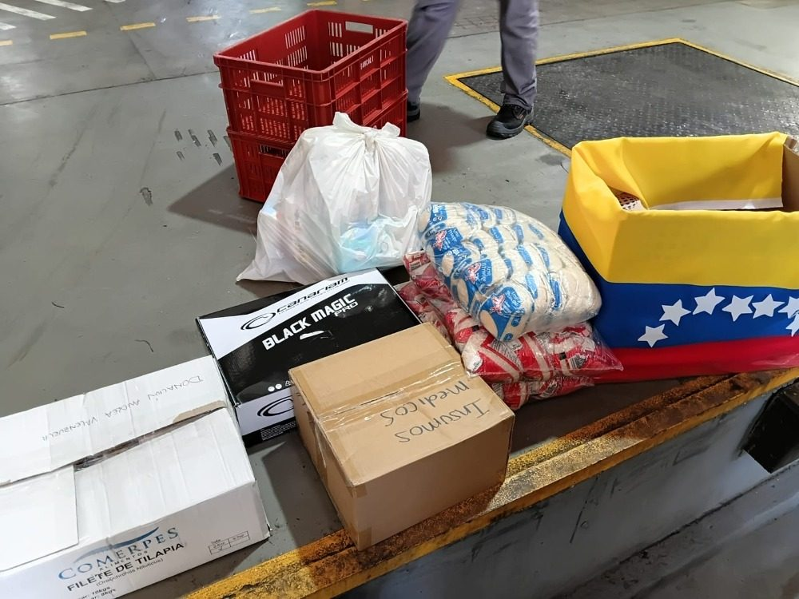

Acciones realizadas
Transparencia es mostrar lo que hacemos. Aquí registramos cada acción de la fundación.
Hace 15 años Permanente
Ruta jurídica gratuita en salud
Acompañamos a usuarios del sistema de salud frente a negativas injustificadas: derechos de petición, tutelas y gestión hasta lograr cirugías, medicamentos, transporte asistencial y procedimientos.
Agregar: número de casos atendidos

En curso Formación
Talleres, cursos y conversatorios
Espacios para niños, jóvenes, adultos y adulto mayor donde se aprende a debatir, argumentar y participar con pensamiento propio.
Agregar: fechas, lugares y participantes

10 de agosto Emergencia
Respuesta al terremoto
Atendemos desde diferentes instancias a los damnificados del terremoto.
Agregar: lugar, qué se entregó y a cuántas familias

¿Quieres ser parte de la próxima acción?
Súmate como voluntario o aliado de la fundación.